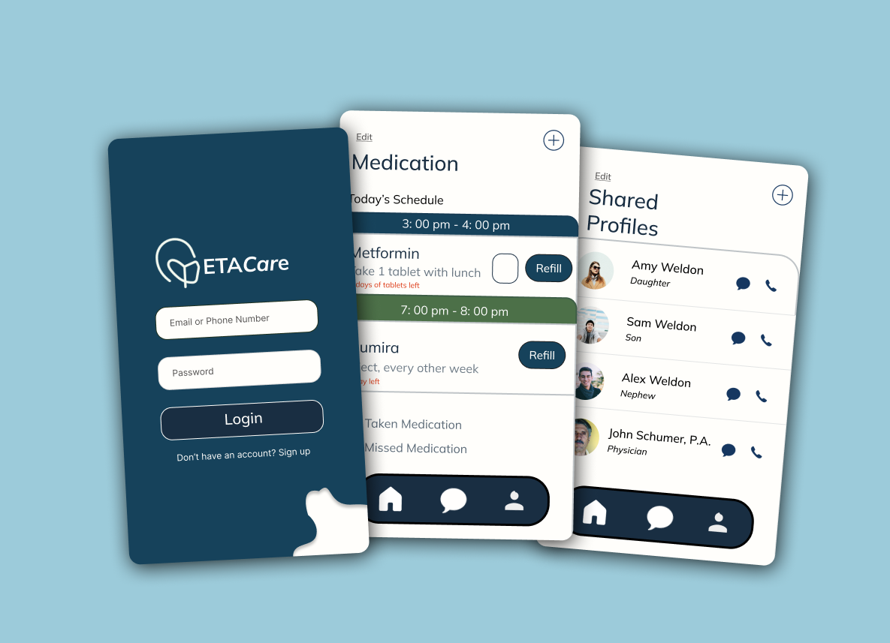

ETACare Task Management App
EtaCare is a task management app that aims to allow caregivers, physicians, and elders to be able to communicate, track medication, create to-do lists, and set appointments to simplify and organize their daily routines.
Problem
People in need of assistance have trouble keeping track of their schedule, remembering their doctor appointments, forgetting when to take their medication, and knowing who to communicate with when they feel helpless. There is a lack of apps that don’t allow cross-communication from clients to caregivers to physicians. This is important to have access to important medical information, care plans, and organization.
Solution
The app addresses individuals in need of assistance who often struggle to manage their schedules, recall doctor appointments, medication schedules, and determine whom to contact during moments of vulnerability. Existing solutions fall short, lacking integrated communication channels connecting clients, caregivers, and physicians. The app fills this gap by facilitating cross-communication, ensuring accessibility to crucial medical information, care plans, and overall organizational support.
Tools
- Figma
My Role
- Design
- Research
Timeline
- Overall: 8 weeks
- Discovery & Research: 2 weeks
- Design & Testing: 6 weeks
My Design Process
Research and Users
Research Process
During the research process, I wanted to find users who found issues with the apps they were using or wanted an app that could benefit them in their everyday lives. So I conducted a survey that asked questions to record users' mobile app habits, what they use, and what they like and dislike about it. I learned that users liked apps to be fast, organized, and feasible. This part of the research was difficult due to having to stay on topic, but I had the user just show me how they use their favorite app and least favorite app and then describe out loud their thought process. I then had them record their answers after finishing the tasks.
Ideate Process
In the ideate process, I went back to look at the answers the users recorded and made a list of mobile app ideas I found interesting, but also where there was a need for improvement. I wrote down a category of people who I found needed to be represented and mobile apps that could be developed. I then looked over the responses to my survey and collaborated on ways to combine the user responses of what needs improvement or what they would like to see (task management, goalkeeping, note-taking). Next, I researched existing mobile apps that mirrored the direction I was going toward and overlooked case studies from product designers who created similar apps.
Users
The target users are clients who need assistance, caregivers, and physicans
Competitors
User Flows & Requirements
Wireframes & Mockups
With Figma, I first briefly sketeched the wireframes to gather ideas how I wanted the app to be formatted. It took a few iterations to get to the final high fidelity design. Once that was completed, I moved on to completing the mockups and prototype of the app.
Usability Testing
For the usbaility testing, I gathered up my previous users and had them test the final protopty of the mobile app. I first observed their first impression of the app, then we did a usability test based on tasks and scenarios.
Tasks & Scenarios
Please Log In to the app, upon seeing your dashboard, you need to create a new task, can you please show me how you will add a new task to your to do-list?
You want to update your current doctor’s appointment and change the time to 10:30 to 11:00 am, how would you update your schedule?
Now you want to alert your family and friends on the changes you made, how would you do that?
UI Design
Once the usability issues were resolved, I moved on to design the final screens in Figma. My goal was to create a visual identity that’s aligned with the brand’s values and message, which is: “brand motto”. Also, I’ve checked the competition and took a deep dive into my catalog of references for inspiration. What kind of visual style did you follow and why? (Fresh, corporate, dark, light?) Did you follow any popular guidelines? (Material Design, iOS Styleguide, etc?) What platforms and devices did you design for? How does your final design reflect your learnings about your users?
Next Steps
For the next phase, it's important to target the UI aspect of this project.
- Add Finger or Voice Recognition
- Change the sizes of the icons
- Focus on consistency within the design
Reflection
During this process, I discovered, there are lot of concepts to consider when designing, and researching. For one, it's important to seek out individuals who are in need of assistance, uses task managemnet apps, and understands how to access their information through an app. This helps to identify specific needs and fulfill them based on user needs.
